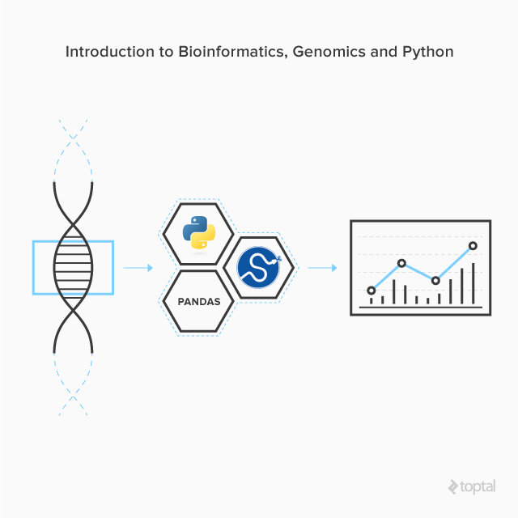
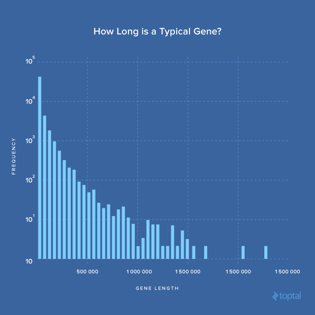
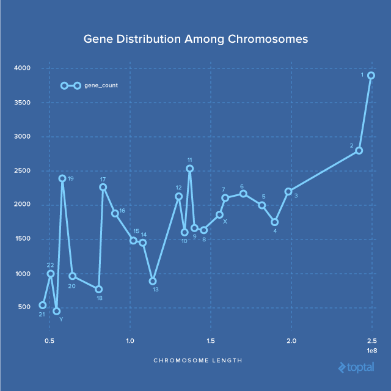

23 min read
View all articles


Bioinformatics is an interdisciplinary field that develops methods and software tools for analyzing and understanding biological data.
More simply stated, you can simply think of it as data science for biology.
Among the many types of biological data, genomics data is one of the most widely analyzed. Especially with the rapid advancement of next-generation DNA sequencing (NGS) technologies, the volume of genomics data has been growing exponentially. According to Stephens, Zachary D et al., genomics data acquisition is on the exabyte-per-year scale.

SciPy gathers many Python modules for scientific computing, which is ideal for many bioinformatic needs.
In this post, I demo an example of analyzing a GFF3 file for the human genome with the SciPy Stack. Generic Feature Format Version 3 (GFF3) is the current standard text file format for storing genomic features. In particular, in this post you will learn how to use the SciPy stack to answer the following questions about the human genome:
- How much of the genome is incomplete?
- How many genes are there in the genome?
- How long is a typical gene?
- What does gene distribution among chromosomes look like?
The latest GFF3 file for the human genome can be downloaded from here. The README file that comes in this directory provides a brief description of this data format, and a more thorough specification is found here.
We will use Pandas, a major component of the SciPy stack providing fast, flexible, and expressive data structures, to manipulate and understand the GFF3 file.
Setup
First things first, let’s setup a virtual environment with the SciPy stack installed. This process can be time-consuming if built from the source manually, as the stack involves many packages – some of which depends on external FORTRAN or C code. Here, I recommend using Miniconda, which makes the setup very easy.
wget https://repo.continuum.io/miniconda/Miniconda3-latest-Linux-x86_64.sh
bash Miniconda3-latest-Linux-x86_64.sh -b
The -b flag on the bash line tells it to execute in
batch mode. After the commands above are used to successfully install
Miniconda, start a new virtual environment for genomics, and then
install the SciPy stack.
mkdir -p genomics
cd genomics
conda create -p venv ipython matplotlib pandas
Note that we have only specified the 3 packages we are going to use in this post.
If you want all the packages listed in the SciPy stack, simply append them to the end of the conda create command.
If you are unsure of the exact name of a package, try conda search. Let’s activate the virtual environment and start IPython.
source activate venv/
ipython
IPython is a significantly more powerful replacement to the default Python interpreter interface, so whatever you used to do in the default python interpreter can also be done in IPython. I highly recommend every Python programmer, who hasn’t been using IPython yet, to give it a try.
Download the Annotation File
With our setup now completed, let’s download the human genome annotation file in GFF3 format.
It is about 37 MB, a very small file compared to the information content of a human genome, which is about 3 GB in plain text. That’s because the GFF3 file only contains the annotation of the sequences, while the sequence data is usually stored in another file format called FASTA. If you are interested, you can download FASTA here, but we won’t use the sequence data in this tutorial.
!wget ftp://ftp.ensembl.org/pub/release-85/gff3/homo_sapiens/Homo_sapiens.GRCh38.85.gff3.gz
The prefixed ! tells IPython that this is a shell
command instead of a Python command. However, IPython can also process
some frequently used shell commands like ls, pwd, rm, mkdir, rmdir even without a prefixed !.
Taking a look at the head of the GFF file, you will see many metadata/pragmas/directives lines starting with ## or #!.
According to the README, ## means the metadata is stable, while #! means it’s experimental.
Later on you will also see ###, which is another directive with yet more subtle meaning based on the specification.
Human readable comments are supposed to be after a single #. For simplicity, we will treat all lines starting with # as comments, and simply ignore them during our analysis.
##gff-version 3
##sequence-region 1 1 248956422
##sequence-region 10 1 133797422
##sequence-region 11 1 135086622
##sequence-region 12 1 133275309
...
##sequence-region MT 1 16569
##sequence-region X 1 156040895
##sequence-region Y 2781480 56887902
#!genome-build GRCh38.p7
#!genome-version GRCh38
#!genome-date 2013-12
#!genome-build-accession NCBI:GCA_000001405.22
#!genebuild-last-updated 2016-06
The first line indicates that the version of GFF format used in this file is 3.
Following that are summaries of all sequence regions. As we will see later, such information can also be found in the body part of the file.
The lines starting with #! shows information about the particular build of the genome, GRCh38.p7, that this annotation file applies to.
Genome Reference Consortium (GCR) is an international consortium, which oversees updates and improvements to several reference genome assemblies, including those for human, mouse, zebrafish, and chicken.
Scanning through this file, here are the first few annotation lines.
1 GRCh38 chromosome 1 248956422 . . . ID=chromosome:1;Alias=CM000663.2,chr1,NC_000001.11
###
1 . biological_region 10469 11240 1.3e+03 . . external_name=oe %3D 0.79;logic_name=cpg
1 . biological_region 10650 10657 0.999 + . logic_name=eponine
1 . biological_region 10655 10657 0.999 - . logic_name=eponine
1 . biological_region 10678 10687 0.999 + . logic_name=eponine
1 . biological_region 10681 10688 0.999 - . logic_name=eponine
...
The columns are seqid, source, type, start, end, score, strand, phase, attributes. Some of them are very easy to understand. Take the first line as an example:
1 GRCh38 chromosome 1 248956422 . . . ID=chromosome:1;Alias=CM000663.2,chr1,NC_000001.11
This is the annotation of the first chromosome with a seqid of 1, which starts from the first base to the 24,895,622nd base.
In other words, the first chromosome is about 25 million bases long.
Our analysis won’t need information from the three columns with a value of . (i.e. score, strand, and phase), so we can simply ignore them for now.
The last attributes column says Chromosome 1 also has three alias names, namely CM000663.2, chr1, and NC_000001.11. That’s basically what a GFF3 file looks like, but we won’t inspect them line by line, so it’s time to load the whole file into Pandas.
Pandas is good fit for dealing with GFF3 format because it is a tab-delimited file, and Pandas has very good support for reading CSV-like files.
Note one exception to the tab-delimited format is when the GFF3 contains ##FASTA .
According to the specification, ##FASTA
indicates the end of an annotation portion, which will be followed with
one or more sequences in FASTA (a non tab-delimited) format. But this
is not the case for the GFF3 file we’re going to analyze.
In [1]: import pandas as pd
In [2]: pd.__version__
Out[2]: '0.18.1'
In [3]: col_names = ['seqid', 'source', 'type', 'start', 'end', 'score', 'strand', 'phase', 'attributes']
Out[3]: df = pd.read_csv('Homo_sapiens.GRCh38.85.gff3.gz', compression='gzip',
sep='\t', comment='#', low_memory=False,
header=None, names=col_names)
The last line above loads the entire GFF3 file with pandas.read_csv method.
Since it is not a standard CSV file, we need to customize the call a bit.
First, we inform Pandas of the unavailability of header information in the GFF3 with header=None, and then we specify the exact name for each column with names=col_names.
If the names argument is not specified, Pandas will use incremental numbers as names for each column.
sep='\t' tells Pandas the columns are tab-separated instead of comma-separated. The value to sep=
can actually be a regular expression (regex). This becomes handy if the
file at hand uses different separators for each column (oh yeah, that
happens). comment='#' means lines starting with # are considered comments and will be ignored.
compression='gzip' tells Pandas that the input file is a gzip-compressed.
In addition, pandas.read_csv has a rich set of parameters that allows different kinds of CSV-like file formats to be read.
The type of the returned value is a DataFrame, which is the most important data structure in Pandas, used for representing 2D data.
Pandas also has a Series and Panel data structure for 1D and 3D data, respectively. Please refer to the documentation for an introduction to Pandas’ data structures.
Let’s take a look at the first few entries with .head method.
In [18]: df.head()
Out[18]:
seqid source type start end score strand phase attributes
0 1 GRCh38 chromosome 1 248956422 . . . ID=chromosome:1;Alias=CM000663.2,chr1,NC_00000...
1 1 . biological_region 10469 11240 1.3e+03 . . external_name=oe %3D 0.79;logic_name=cpg
2 1 . biological_region 10650 10657 0.999 + . logic_name=eponine
3 1 . biological_region 10655 10657 0.999 - . logic_name=eponine
4 1 . biological_region 10678 10687 0.999 + . logic_name=eponine
The output is nicely formatted in a tabular format with longer strings in the attributes column partially replaced with ....
You can set Pandas to not omit long strings with pd.set_option('display.max_colwidth', -1). In addition, Pandas has many options that can be customized.
Next, let’s get some basic information about this dataframe with the .info method.
In [20]: df.info()
<class 'pandas.core.frame.DataFrame'>
RangeIndex: 2601849 entries, 0 to 2601848
Data columns (total 9 columns):
seqid object
source object
type object
start int64
end int64
score object
strand object
phase object
attributes object
dtypes: int64(2), object(7)
memory usage: 178.7+ MB
This shows that the GFF3 has 2,601,848 annotated lines, and each line has nine columns.
For each column, it also shows their data types.
That start and end are of int64 type, integers representing positions in the genome.
The other columns are all of type object, which probably means their values consist of a mixture of integers, floats, and strings.
The size of all the information is about 178.7+ MB stored in memory. This turns out to be more compact than the uncompressed file, which will be about 402 MB. A quick verification is shown below.
gunzip -c Homo_sapiens.GRCh38.85.gff3.gz > /tmp/tmp.gff3 && du -s /tmp/tmp.gff3
402M /tmp/tmp.gff3
From a high-level view, we have loaded the entire GFF3 file into a DataFrame object in Python, and all of our following analysis will be based on this single object.
Now, let’s see what the first column seqid is all about.
In [29]: df.seqid.unique()
Out[29]:
array(['1', '10', '11', '12', '13', '14', '15', '16', '17', '18', '19',
'2', '20', '21', '22', '3', '4', '5', '6', '7', '8', '9',
'GL000008.2', 'GL000009.2', 'GL000194.1', 'GL000195.1',
...
'KI270757.1', 'MT', 'X', 'Y'], dtype=object)
In [30]: df.seqid.unique().shape
Out[30]: (194,)
df.seqid is one way to access column data from a dataframe. Another way is df['seqid'], which is more general syntax, because if the column name is a Python reserved keyword (e.g. class) or contains a . or space character, the first way (df.seqid) won’t work.
The output shows that there are 194 unique seqids, which include Chromosomes 1 to 22, X, Y, and mitochondrion (MT) DNA as well as 169 others seqids.
The seqids starting with KI and GL are DNA sequences – or scaffolds – in the genome that have not been successfully assembled into the chromosomes.
For those who are unfamiliar with genomics, this is important.
Although the first human genome draft came out more than 15 years ago, the current human genome is still incomplete. The difficulty in assembling these sequences is largely due to complex repetitive regions in the genome.
Next, let’s take a look at the source column.
The README says that the source is a free text qualifier intended to describe the algorithm or operating procedure that generated this feature.
In [66]: df.source.value_counts()
Out[66]:
havana 1441093
ensembl_havana 745065
ensembl 228212
. 182510
mirbase 4701
GRCh38 194
insdc 74
This is an example of the use of the value_counts method, which is extremely useful for a quick count of categorical variables.
From the result, we can see that there are seven possible values for this column, and the majority of entries in the GFF3 file come from havana, ensembl and ensembl_havana.
You can learn more about what these sources mean and the relationships between them in this post.
To keep things simple, we will focus on entries from sources GRCh38, havana, ensembl, and ensembl_havan.a.
How Much of the Genome Is Incomplete?
The information about each entire chromosome is in the entries from
source GRCh38, so let’s first filter out the rest, and assign the
filtered result to a new variable gdf.
In [70]: gdf = df[df.source == 'GRCh38']
In [87]: gdf.shape
Out[87]: (194, 9)
In [84]: gdf.sample(10)
Out[84]:
seqid source type start end score strand phase attributes
2511585 KI270708.1 GRCh38 supercontig 1 127682 . . . ID=supercontig:KI270708.1;Alias=chr1_KI270708v...
2510840 GL000208.1 GRCh38 supercontig 1 92689 . . . ID=supercontig:GL000208.1;Alias=chr5_GL000208v...
990810 17 GRCh38 chromosome 1 83257441 . . . ID=chromosome:17;Alias=CM000679.2,chr17,NC_000...
2511481 KI270373.1 GRCh38 supercontig 1 1451 . . . ID=supercontig:KI270373.1;Alias=chrUn_KI270373...
2511490 KI270384.1 GRCh38 supercontig 1 1658 . . . ID=supercontig:KI270384.1;Alias=chrUn_KI270384...
2080148 6 GRCh38 chromosome 1 170805979 . . . ID=chromosome:6;Alias=CM000668.2,chr6,NC_00000...
2511504 KI270412.1 GRCh38 supercontig 1 1179 . . . ID=supercontig:KI270412.1;Alias=chrUn_KI270412...
1201561 19 GRCh38 chromosome 1 58617616 . . . ID=chromosome:19;Alias=CM000681.2,chr19,NC_000...
2511474 KI270340.1 GRCh38 supercontig 1 1428 . . . ID=supercontig:KI270340.1;Alias=chrUn_KI270340...
2594560 Y GRCh38 chromosome 2781480 56887902 . . . ID=chromosome:Y;Alias=CM000686.2,chrY,NC_00002...
Filtering is easy in Pandas.
If you inspect the value evaluated from the expression df.source == 'GRCh38', it’s a series of True and False values for each entry with the same index as df. Passing it to df[] will only return those entries where their corresponding values are True.
There are 194 keys in df[] for which df.source == 'GRCh38'.
As we’ve seen previously, there are also 194 unique values in the seqid column, meaning each entry in gdf corresponds to a particular seqid.
Then we randomly select 10 entries with the sample method to take closer look.
You can see that the unassembled sequences are of type supercontig while the others are of chromosome. To compute the fraction of genome that’s incomplete, we first need to know the length of the entire genome, which is the sum of the lengths of all seqids.
In [90]: gdf = gdf.copy()
In [91]: gdf['length'] = gdf.end - gdf.start + 1
In [93]: gdf.head()
Out[93]:
seqid source type start end score strand phase attributes length
0 1 GRCh38 chromosome 1 248956422 . . . ID=chromosome:1;Alias=CM000663.2,chr1,NC_00000... 248956421
235068 10 GRCh38 chromosome 1 133797422 . . . ID=chromosome:10;Alias=CM000672.2,chr10,NC_000... 133797421
328938 11 GRCh38 chromosome 1 135086622 . . . ID=chromosome:11;Alias=CM000673.2,chr11,NC_000... 135086621
483370 12 GRCh38 chromosome 1 133275309 . . . ID=chromosome:12;Alias=CM000674.2,chr12,NC_000... 133275308
634486 13 GRCh38 chromosome 1 114364328 . . . ID=chromosome:13;Alias=CM000675.2,chr13,NC_000... 114364327
In [97]: gdf.length.sum()
Out[97]: 3096629532
In [99]: chrs = [str(_) for _ in range(1, 23)] + ['X', 'Y', 'MT']
In [101]: gdf[-gdf.seqid.isin(chrs)].length.sum() / gdf.length.sum()
Out[101]: 0.0037021917421198327
In the above snippet first, we made a copy of gdf with .copy(). Otherwise, the original gdf is just a slice of df, and modifying it directly would result in SettingWithCopyWarning (see here for more details).
We then calculate the length of each entry and add it back to gdf
as a new column named “length”. The total length turns out to be about
3.1 billion, and the fraction of unassembled sequences is about 0.37%.
Here is how the slicing works in the last two commands.
First, we create a list of strings that covers all seqids of well
assembled sequences, which are all chromosomes and mitochondria. We then
use the isin method to filter all entries whose seqid are in the chrs list.
A minus sign (-) is added to the beginning of the index to reverse the selection, because we actually want everything that is not in the list (i.e. we want the unassembled ones starting with KI and GL)…
Note: Since the assembled and unassembled sequences are distinguished by the type column, the last line can alternatively be rewritten as follows to obtain the same results.
gdf[(gdf['type'] == 'supercontig')].length.sum() / gdf.length.sum()
How Many Genes Are There?
Here we focus on the entries from source ensembl, havana and ensembl_havana since they’re where the majority of the annotation entries belong.
In [109]: edf = df[df.source.isin(['ensembl', 'havana', 'ensembl_havana'])]
In [111]: edf.sample(10)
Out[111]:
seqid source type start end score strand phase attributes
915996 16 havana CDS 27463541 27463592 . - 2 ID=CDS:ENSP00000457449;Parent=transcript:ENST0...
2531429 X havana exon 41196251 41196359 . + . Parent=transcript:ENST00000462850;Name=ENSE000...
1221944 19 ensembl_havana CDS 5641740 5641946 . + 0 ID=CDS:ENSP00000467423;Parent=transcript:ENST0...
243070 10 havana exon 13116267 13116340 . + . Parent=transcript:ENST00000378764;Name=ENSE000...
2413583 8 ensembl_havana exon 144359184 144359423 . + . Parent=transcript:ENST00000530047;Name=ENSE000...
2160496 6 havana exon 111322569 111322678 . - . Parent=transcript:ENST00000434009;Name=ENSE000...
839952 15 havana exon 76227713 76227897 . - . Parent=transcript:ENST00000565910;Name=ENSE000...
957782 16 ensembl_havana exon 67541653 67541782 . + . Parent=transcript:ENST00000379312;Name=ENSE000...
1632979 21 ensembl_havana exon 37840658 37840709 . - . Parent=transcript:ENST00000609713;Name=ENSE000...
1953399 4 havana exon 165464390 165464586 . + . Parent=transcript:ENST00000511992;Name=ENSE000...
In [123]: edf.type.value_counts()
Out[123]:
exon 1180596
CDS 704604
five_prime_UTR 142387
three_prime_UTR 133938
transcript 96375
gene 42470
processed_transcript 28228
...
Name: type, dtype: int64
The isin method is used again for filtering.
Then, a quick value count shows that the majority of the entries are exon, coding sequence (CDS), and untranslated region (UTR).
These are sub-gene elements, but we are mainly looking for the gene count. As shown, there are 42,470, but we want to know more.
Specifically, what are their names, and what do they do? To answer these questions, we need to look closely at the information in the attributes column.
In [127]: ndf = edf[edf.type == 'gene']
In [173]: ndf = ndf.copy()
In [133]: ndf.sample(10).attributes.values
Out[133]:
array(['ID=gene:ENSG00000228611;Name=HNF4GP1;biotype=processed_pseudogene;description=hepatocyte nuclear factor 4 gamma pseudogene 1 [Source:HGNC Symbol%3BAcc:HGNC:35417];gene_id=ENSG00000228611;havana_gene=OTTHUMG00000016986;havana_version=2;logic_name=havana;version=2',
'ID=gene:ENSG00000177189;Name=RPS6KA3;biotype=protein_coding;description=ribosomal protein S6 kinase A3 [Source:HGNC Symbol%3BAcc:HGNC:10432];gene_id=ENSG00000177189;havana_gene=OTTHUMG00000021231;havana_version=5;logic_name=ensembl_havana_gene;version=12',
'ID=gene:ENSG00000231748;Name=RP11-227H15.5;biotype=antisense;gene_id=ENSG00000231748;havana_gene=OTTHUMG00000018373;havana_version=1;logic_name=havana;version=1',
'ID=gene:ENSG00000227426;Name=VN1R33P;biotype=unitary_pseudogene;description=vomeronasal 1 receptor 33 pseudogene [Source:HGNC Symbol%3BAcc:HGNC:37353];gene_id=ENSG00000227426;havana_gene=OTTHUMG00000154474;havana_version=1;logic_name=havana;version=1',
'ID=gene:ENSG00000087250;Name=MT3;biotype=protein_coding;description=metallothionein 3 [Source:HGNC Symbol%3BAcc:HGNC:7408];gene_id=ENSG00000087250;havana_gene=OTTHUMG00000133282;havana_version=3;logic_name=ensembl_havana_gene;version=8',
'ID=gene:ENSG00000177108;Name=ZDHHC22;biotype=protein_coding;description=zinc finger DHHC-type containing 22 [Source:HGNC Symbol%3BAcc:HGNC:20106];gene_id=ENSG00000177108;havana_gene=OTTHUMG00000171575;havana_version=3;logic_name=ensembl_havana_gene;version=5',
'ID=gene:ENSG00000249784;Name=SCARNA22;biotype=scaRNA;description=small Cajal body-specific RNA 22 [Source:HGNC Symbol%3BAcc:HGNC:32580];gene_id=ENSG00000249784;logic_name=ncrna;version=1',
'ID=gene:ENSG00000079101;Name=CLUL1;biotype=protein_coding;description=clusterin like 1 [Source:HGNC Symbol%3BAcc:HGNC:2096];gene_id=ENSG00000079101;havana_gene=OTTHUMG00000178252;havana_version=7;logic_name=ensembl_havana_gene;version=16',
'ID=gene:ENSG00000229224;Name=AC105398.3;biotype=antisense;gene_id=ENSG00000229224;havana_gene=OTTHUMG00000152025;havana_version=1;logic_name=havana;version=1',
'ID=gene:ENSG00000255552;Name=LY6G6E;biotype=protein_coding;description=lymphocyte antigen 6 complex%2C locus G6E (pseudogene) [Source:HGNC Symbol%3BAcc:HGNC:13934];gene_id=ENSG00000255552;havana_gene=OTTHUMG00000166419;havana_version=1;logic_name=ensembl_havana_gene;version=7'], dtype=object)
They are formatted as semicolon-separated list of tag-value pairs. The information we are most interested in is gene name, gene ID and description, and we will extract them with regular expression (regex).
import re
RE_GENE_NAME = re.compile(r'Name=(?P<gene_name>.+?);')
def extract_gene_name(attributes_str):
res = RE_GENE_NAME.search(attributes_str)
return res.group('gene_name')
ndf['gene_name'] = ndf.attributes.apply(extract_gene_name)
First, we extract the gene names.
In the regex Name=(?P<gene_name>.+?); , +? is used instead of +
because we want it to be non-greedy and let the search stop at the
first semicolon; otherwise, the result will match up to the last
semicolon.
Also, the regex is first compiled with re.compile instead of being used directly as in re.search for better performance because we will apply it to thousands of attribute strings.
extract_gene_name serves as a helper function to be used in pd.apply, which is the method to use when a function needs to be applied on every entry of a dataframe or series.
In this particular case, we want to extract the gene name for every entry in ndf.attributes, and add the names back to ndf in a new column called gene_name.
Gene IDs and description are extracted in a similar way.
RE_GENE_ID = re.compile(r'gene_id=(?P<gene_id>ENSG.+?);')
def extract_gene_id(attributes_str):
res = RE_GENE_ID.search(attributes_str)
return res.group('gene_id')
ndf['gene_id'] = ndf.attributes.apply(extract_gene_id)
RE_DESC = re.compile('description=(?P<desc>.+?);')
def extract_description(attributes_str):
res = RE_DESC.search(attributes_str)
if res is None:
return ''
else:
return res.group('desc')
ndf['desc'] = ndf.attributes.apply(extract_description)
The regex for RE_GENE_ID is a bit more specific since we know that every gene_id must start with ENSG, where ENS means ensembl and G means gene.
For entries that don’t have any description, we will return an empty
string. After everything is extracted, we won’t use the attributes
column anymore, so let’s drop it to keep things nice and clean with the
method .drop:
In [224]: ndf.drop('attributes', axis=1, inplace=True)
In [225]: ndf.head()
Out[225]:
seqid source type start end score strand phase gene_id gene_name desc
16 1 havana gene 11869 14409 . + . ENSG00000223972 DDX11L1 DEAD/H-box helicase 11 like 1 [Source:HGNC Sym...
28 1 havana gene 14404 29570 . - . ENSG00000227232 WASH7P WAS protein family homolog 7 pseudogene [Sourc...
71 1 havana gene 52473 53312 . + . ENSG00000268020 OR4G4P olfactory receptor family 4 subfamily G member...
74 1 havana gene 62948 63887 . + . ENSG00000240361 OR4G11P olfactory receptor family 4 subfamily G member...
77 1 ensembl_havana gene 69091 70008 . + . ENSG00000186092 OR4F5 olfactory receptor family 4 subfamily F member...
In the above call, attributes indicates the specific column we want to drop.
axis=1 means we are dropping a column instead of a row (axis=0 by default).
inplace=True means that the drop is operated on the DataFrame itself instead of returning a new copy with specified column dropped.
A quick .head look shows that the attributes column is indeed gone, and three new columns: gene_name, gene_id, and desc have been added.
Out of curiosity, let’s see if all gene_id and gene_name are unique:
In [232]: ndf.shape
Out[232]: (42470, 11)
In [233]: ndf.gene_id.unique().shape
Out[233]: (42470,)
In [234]: ndf.gene_name.unique().shape
Out[234]: (42387,)
Surprisingly, the number of gene names is smaller than that of gene IDs, indicating that some gene_name must correspond to multiple gene IDs. Let’s find out what they are.
In [243]: count_df = ndf.groupby('gene_name').count().ix[:, 0].sort_values().ix[::-1]
In [244]: count_df.head(10)
Out[244]:
gene_name
SCARNA20 7
SCARNA16 6
SCARNA17 5
SCARNA15 4
SCARNA21 4
SCARNA11 4
Clostridiales-1 3
SCARNA4 3
C1QTNF9B-AS1 2
C11orf71 2
Name: seqid, dtype: int64
In [262]: count_df[count_df > 1].shape
Out[262]: (63,)
In [263]: count_df.shape
Out[263]: (42387,)
In [264]: count_df[count_df > 1].shape[0] / count_df.shape[0]
Out[264]: 0.0014863047632528842
We group all entries by the value of gene_name, then count the number of items in each group with .count().
If you inspect the output from ndf.groupby('gene_name').count(), all columns are counted for each group, but most of them have the same values.
Note that NA values won’t be considered when counting, so only take the count of the first column, seqid ( we use .ix[:, 0] to ensure that there are no NA values).
Then sort the count values with .sort_values and reverse the order with .ix[::-1].
In the result, a gene name can be shared with up to seven gene IDs.
In [255]: ndf[ndf.gene_name == 'SCARNA20']
Out[255]:
seqid source type start end score strand phase gene_id gene_name desc
179399 1 ensembl gene 171768070 171768175 . + . ENSG00000253060 SCARNA20 Small Cajal body specific RNA 20 [Source:RFAM%3BAcc:RF00601]
201037 1 ensembl gene 204727991 204728106 . + . ENSG00000251861 SCARNA20 Small Cajal body specific RNA 20 [Source:RFAM%3BAcc:RF00601]
349203 11 ensembl gene 8555016 8555146 . + . ENSG00000252778 SCARNA20 Small Cajal body specific RNA 20 [Source:RFAM%3BAcc:RF00601]
718520 14 ensembl gene 63479272 63479413 . + . ENSG00000252800 SCARNA20 Small Cajal body specific RNA 20 [Source:RFAM%3BAcc:RF00601]
837233 15 ensembl gene 75121536 75121666 . - . ENSG00000252722 SCARNA20 Small Cajal body specific RNA 20 [Source:RFAM%3BAcc:RF00601]
1039874 17 ensembl gene 28018770 28018907 . + . ENSG00000251818 SCARNA20 Small Cajal body specific RNA 20 [Source:RFAM%3BAcc:RF00601]
1108215 17 ensembl gene 60231516 60231646 . - . ENSG00000252577 SCARNA20 small Cajal body-specific RNA 20 [Source:HGNC Symbol%3BAcc:HGNC:32578]
A closer look at all the SCARNA20 genes shows that they’re indeed all different.
While they share the same name, they are located at different positions of the genome.
Their descriptions, however, don’t seem very helpful in distinguishing them.
The point here is to know that gene names are not unique for all gene IDs, and about 0.15% of the names that are shared by multiple genes.
How Long Is a Typical Gene?
Similar to what we did when we were trying to understand the incompleteness of the genome, we can easily add a length column to ndf:
In [277]: ndf['length'] = ndf.end - ndf.start + 1
In [278]: ndf.length.describe()
Out[278]:
count 4.247000e+04
mean 3.583348e+04
std 9.683485e+04
min 8.000000e+00
25% 8.840000e+02
50% 5.170500e+03
75% 3.055200e+04
max 2.304997e+06
Name: length, dtype: float64
.describe() calculates some simple statistics based on the length values:
-
Mean length of a gene is about 36,000 bases
-
Median length of a gene is about 5,200 bases long
-
Minimum and maximum gene lengths are about eight and 2.3 million bases long, respectively.
Because the mean is much larger than the median, it implies that length distribution is skewed to the right. To have a more concrete look, let’s plot the distribution.
import matplotlib as plt
ndf.length.plot(kind='hist', bins=50, logy=True)
plt.show()
Pandas provides a simple interface to matplotlib to make plotting very handy with DataFrames or series.
In this case, it says that we want a histogram plot (kind='hist') with 50 bins, and let the y axis be on a log scale (logy=True).

From the histogram, we can see that the majority of genes are within the first bin. However, some gene lengths can be more than two million bases. Let’s find out what they are:
In [39]: ndf[ndf.length > 2e6].sort_values('length').ix[::-1]
Out[39]:
seqid source type start end score strand phase gene_name gene_id desc length
2309345 7 ensembl_havana gene 146116002 148420998 . + . CNTNAP2 ENSG00000174469 contactin associated protein-like 2 [Source:HG... 2304997
2422510 9 ensembl_havana gene 8314246 10612723 . - . PTPRD ENSG00000153707 protein tyrosine phosphatase%2C receptor type ... 2298478
2527169 X ensembl_havana gene 31097677 33339441 . - . DMD ENSG00000198947 dystrophin [Source:HGNC Symbol%3BAcc:HGNC:2928] 2241765
440886 11 ensembl_havana gene 83455012 85627922 . - . DLG2 ENSG00000150672 discs large MAGUK scaffold protein 2 [Source:H... 2172911
2323457 8 ensembl_havana gene 2935353 4994972 . - . CSMD1 ENSG00000183117 CUB and Sushi multiple domains 1 [Source:HGNC ... 2059620
1569914 20 ensembl_havana gene 13995369 16053197 . + . MACROD2 ENSG00000172264 MACRO domain containing 2 [Source:HGNC Symbol%... 2057829
As you can see, the longest gene is named CNTNAP2, which is short for contactin associated protein-like 2. According to its wikipedia page,
This gene encompasses almost 1.6% of chromosome 7 and is one of the largest genes in the human genome.
Indeed! We just verified that ourselves. In contrast, what about the smallest genes? It turns out that they can be as short as eight bases.
In [40]: ndf.sort_values('length').head()
Out[40]:
seqid source type start end score strand phase gene_name gene_id desc length
682278 14 havana gene 22438547 22438554 . + . TRDD1 ENSG00000223997 T cell receptor delta diversity 1 [Source:HGNC... 8
682282 14 havana gene 22439007 22439015 . + . TRDD2 ENSG00000237235 T cell receptor delta diversity 2 [Source:HGNC... 9
2306836 7 havana gene 142786213 142786224 . + . TRBD1 ENSG00000282431 T cell receptor beta diversity 1 [Source:HGNC ... 12
682286 14 havana gene 22449113 22449125 . + . TRDD3 ENSG00000228985 T cell receptor delta diversity 3 [Source:HGNC... 13
1879625 4 havana gene 10238213 10238235 . - . AC006499.9 ENSG00000271544 23
The lengths of the two extreme cases are five orders of magnitude apart (2.3 million vs. 8), which is enormous and which can be an indication of the level of diversity of life.
A single gene can be translated to many different proteins via a process called alternative splicing, something we haven’t explored. Such information is also inside the GFF3 file, but outside the scope of this post.
Gene Distribution Among Chromosomes
The last thing I’d like to discuss is gene distribution among chromosomes, which also serves as an example for introducing the .merge method for combining two DataFrames. Intuitively, longer chromosomes likely host more genes. Let’s see if that is true.
In [53]: ndf = ndf[ndf.seqid.isin(chrs)]
In [54]: chr_gene_counts = ndf.groupby('seqid').count().ix[:, 0].sort_values().ix[::-1]
Out[54]: chr_gene_counts
seqid
1 3902
2 2806
11 2561
19 2412
17 2280
3 2204
6 2154
12 2140
7 2106
5 2002
16 1881
X 1852
4 1751
9 1659
8 1628
10 1600
15 1476
14 1449
22 996
20 965
13 872
18 766
21 541
Y 436
Name: source, dtype: int64
We borrowed the chrs variable from the previous section,
and used it to filter out the unassembled sequences. Based on the
output, the largest Chromosome 1 indeed has the most genes. While
Chromosome Y has the smallest number of genes, it is not the smallest
chromosome.
Note that there seem to be no genes in the mitochondrion (MT), which is not true.
A bit more filtering on the first DataFrame df returned by pd.read_csv shows that all MT genes are from source insdc (which were filtered out before when generating edf where we only considered sources of havana, ensembl, or ensembl_havana).
In [134]: df[(df.type == 'gene') & (df.seqid == 'MT')]
Out[134]:
seqid source type start end score strand phase attributes
2514003 MT insdc gene 648 1601 . + . ID=gene:ENSG00000211459;Name=MT-RNR1;biotype=M...
2514009 MT insdc gene 1671 3229 . + . ID=gene:ENSG00000210082;Name=MT-RNR2;biotype=M...
2514016 MT insdc gene 3307 4262 . + . ID=gene:ENSG00000198888;Name=MT-ND1;biotype=pr...
2514029 MT insdc gene 4470 5511 . + . ID=gene:ENSG00000198763;Name=MT-ND2;biotype=pr...
2514048 MT insdc gene 5904 7445 . + . ID=gene:ENSG00000198804;Name=MT-CO1;biotype=pr...
2514058 MT insdc gene 7586 8269 . + . ID=gene:ENSG00000198712;Name=MT-CO2;biotype=pr...
2514065 MT insdc gene 8366 8572 . + . ID=gene:ENSG00000228253;Name=MT-ATP8;biotype=p...
2514069 MT insdc gene 8527 9207 . + . ID=gene:ENSG00000198899;Name=MT-ATP6;biotype=p...
2514073 MT insdc gene 9207 9990 . + . ID=gene:ENSG00000198938;Name=MT-CO3;biotype=pr...
2514080 MT insdc gene 10059 10404 . + . ID=gene:ENSG00000198840;Name=MT-ND3;biotype=pr...
2514087 MT insdc gene 10470 10766 . + . ID=gene:ENSG00000212907;Name=MT-ND4L;biotype=p...
2514091 MT insdc gene 10760 12137 . + . ID=gene:ENSG00000198886;Name=MT-ND4;biotype=pr...
2514104 MT insdc gene 12337 14148 . + . ID=gene:ENSG00000198786;Name=MT-ND5;biotype=pr...
2514108 MT insdc gene 14149 14673 . - . ID=gene:ENSG00000198695;Name=MT-ND6;biotype=pr...
2514115 MT insdc gene 14747 15887 . + . ID=gene:ENSG00000198727;Name=MT-CYB;biotype=pr...
This example also shows how to combine two conditions during filtering with &; the logical operator for “or” would be |.
Note that the parentheses around each condition are required, and
this part of the syntax in Pandas is different from Python, which would
have been literal and and or.
Next, let’s borrow the gdf DataFrame from the previous section as a source for the length of each chromosome:
In [61]: gdf = gdf[gdf.seqid.isin(chrs)]
In [62]: gdf.drop(['start', 'end', 'score', 'strand', 'phase' ,'attributes'], axis=1, inplace=True)
In [63]: gdf.sort_values('length').ix[::-1]
Out[63]:
seqid source type length
0 1 GRCh38 chromosome 248956422
1364641 2 GRCh38 chromosome 242193529
1705855 3 GRCh38 chromosome 198295559
1864567 4 GRCh38 chromosome 190214555
1964921 5 GRCh38 chromosome 181538259
2080148 6 GRCh38 chromosome 170805979
2196981 7 GRCh38 chromosome 159345973
2514125 X GRCh38 chromosome 156040895
2321361 8 GRCh38 chromosome 145138636
2416560 9 GRCh38 chromosome 138394717
328938 11 GRCh38 chromosome 135086622
235068 10 GRCh38 chromosome 133797422
483370 12 GRCh38 chromosome 133275309
634486 13 GRCh38 chromosome 114364328
674767 14 GRCh38 chromosome 107043718
767312 15 GRCh38 chromosome 101991189
865053 16 GRCh38 chromosome 90338345
990810 17 GRCh38 chromosome 83257441
1155977 18 GRCh38 chromosome 80373285
1559144 20 GRCh38 chromosome 64444167
1201561 19 GRCh38 chromosome 58617616
2594560 Y GRCh38 chromosome 54106423
1647482 22 GRCh38 chromosome 50818468
1616710 21 GRCh38 chromosome 46709983
2513999 MT GRCh38 chromosome 16569
The columns that are not relevant to the analysis are dropped for clarity.
Yes, .drop can also take a list of columns and drop them altogether in one operation.
Note that the row with a seqid of MT is still there; we will get back to it later. The next operation we will perform is merge the two datasets based on the values of seqid.
In [73]: cdf = chr_gene_counts.to_frame(name='gene_count').reset_index()
In [75]: cdf.head(2)
Out[75]:
seqid gene_count
0 1 3902
1 2 2806
In [78]: merged = gdf.merge(cdf, on='seqid')
In [79]: merged
Out[79]:
seqid source type length gene_count
0 1 GRCh38 chromosome 248956422 3902
1 10 GRCh38 chromosome 133797422 1600
2 11 GRCh38 chromosome 135086622 2561
3 12 GRCh38 chromosome 133275309 2140
4 13 GRCh38 chromosome 114364328 872
5 14 GRCh38 chromosome 107043718 1449
6 15 GRCh38 chromosome 101991189 1476
7 16 GRCh38 chromosome 90338345 1881
8 17 GRCh38 chromosome 83257441 2280
9 18 GRCh38 chromosome 80373285 766
10 19 GRCh38 chromosome 58617616 2412
11 2 GRCh38 chromosome 242193529 2806
12 20 GRCh38 chromosome 64444167 965
13 21 GRCh38 chromosome 46709983 541
14 22 GRCh38 chromosome 50818468 996
15 3 GRCh38 chromosome 198295559 2204
16 4 GRCh38 chromosome 190214555 1751
17 5 GRCh38 chromosome 181538259 2002
18 6 GRCh38 chromosome 170805979 2154
19 7 GRCh38 chromosome 159345973 2106
20 8 GRCh38 chromosome 145138636 1628
21 9 GRCh38 chromosome 138394717 1659
22 X GRCh38 chromosome 156040895 1852
23 Y GRCh38 chromosome 54106423 436
Since chr_gene_counts is still a Series object, which doesn’t support a merge operation, we need to convert it to a DataFrame object first with .to_frame.
.reset_index() converts the original index (i.e. seqid) into a new column and resets current index as 0-based incremental numbers.
The output from cdf.head(2) shows what it looks like. Next, we used the .merge method to combine the two DataFrame on the seqid column (on='seqid').
After merging gdf and cdf, the MT entry is still missing. This is because, by default, .merge operates an inner join, while left join, right join, or outer join are available by tuning the how parameter.
Please refer to the documentation for more details.
Later, you may find that there is also a related .join method. .merge and .join are similar yet have different APIs.
According to the official documentation says
The related DataFrame.join method, uses merge internally for the index-on-index and index-on-column(s) joins, but joins on indexes by default rather than trying to join on common columns (the default behavior for merge). If you are joining on index, you may wish to use DataFrame.join to save yourself some typing.
Basically, .merge is more general-purpose and used by .join.
Finally, we are ready to calculate the correlation between chromosome length and gene_count.
In [81]: merged[['length', 'gene_count']].corr()
Out[81]:
length gene_count
length 1.000000 0.728221
gene_count 0.728221 1.000000
By default .corr calculates the Pearson correlation between all pairs of columns in a dataframe.
But we have only a single pair of columns in this case, and the correlation turns out to be positive – 0.73.
In other words, the larger the chromosome, the more likely it is to
have more genes. Let’s also plot the two columns after sorting the value
pairs by length:
ax = merged[['length', 'gene_count']].sort_values('length').plot(x='length', y='gene_count', style='o-')
# add some margin to both ends of x axis
xlim = ax.get_xlim()
margin = xlim[0] * 0.1
ax.set_xlim([xlim[0] - margin, xlim[1] + margin])
# Label each point on the graph
for (s, x, y) in merged[['seqid', 'length', 'gene_count']].sort_values('length').values:
ax.text(x, y - 100, str(s))

As seen in image above, even though it is a positive correlation overall, it does not hold for all chromosomes. In particular, for Chromosome 17, 16, 15, 14, 13, the correlation is actually negative, meaning the number of genes on the chromosome decreases as the chromosome size increases.
Findings and Future Research
That ends our tutorial on the manipulation of an annotation file for human genome in GFF3 format with the SciPy stack. The tools we’ve mainly used include IPython, Pandas, and matplotlib. During the tutorial, not only have we learned some of the most common and useful operations in Pandas, we also answered some very interesting questions about our genome. In summary:
- About 0.37% of the human genome is still incomplete even though the first draft came out over 15 years ago.
- There are about 42,000 genes in the human genome based on this particular GFF3 file we used.
- The length of a gene can range from a few dozen to over two million bases.
- Genes are not evenly distributed among the chromosomes. Overall, the larger the chromosome, the more genes it hosts, but for a subset of the chromosomes, the correlation can be negative.
The GFF3 file is very rich in annotation information, and we have just scratched the surface. If you are interested in further exploration, here are a few questions you can play with:
- How many transcripts does a gene typically have? What percentage of genes have more than 1 transcript?
- How many isoforms does a transcript typically have?
- How many exons, CDS, and UTRs does a transcript typically have? What sizes are they?
- Is it possible to categorize the genes based on their function as described in the description column?
comments powered by Disqus